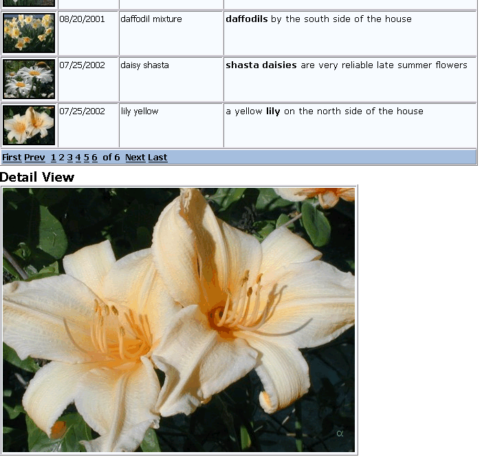

Displaying Images from a Table
A field in a table may contain an image or the file location of an image (an image reference field). This example shows how to display these two types of images.
Preparing the Data
The "Web_Applications_Demo" database is located in the Samples folder under the Alpha Five installation folder.
This example uses a series of high resolution images that are located in the Samples\WebAppServerDemo\Hires folder under the Alpha Five installation folder.
In the Web Projects Control Panel right click and select New Folder.
Name the folder "Hires" and click OK.
Use Windows Explorer to copy the files in the Samples\WebAppServerDemo\Hires folder to the new Hires folder under your webproject folder.
Creating the Grid Component
Create a new grid component based on the Flowers table.
On the Component Type page check Grid contains a 'Detail View' part.
On the Grid > Fields menu add the "Id", "Imagedate", "Keywords", "Thumbnail", and "Description" fields to the grid.
Select the "Id" field in the Selected Fields list.
Change its Display Settings > Control type to "Link".
Change its Link Properties > Display what in link field to "Value from other field(s)".
Click
 in the Link Properties > Field(s) to display field display the Link Display Value dialog.
in the Link Properties > Field(s) to display field display the Link Display Value dialog.Select "{Thumbnail}" and double click.
Change its Link Properties > Link address type field to "Detailview link".
Change the Column Properties > Column heading field to "Select".
Select the "Thumbnail" field in the Selected Fields list.
Change the Column Properties > Hide column field to "True".
Change its Display Settings > Control type to "Image".
Click
in the Image Properties > In-line Style field display the Style Editor dialog.Display the Edges tab, set the Borders> Width field to 0, and click OK.
Select the "Imagedate" field in the Selected Fields list and change its Column Properties > Column heading field to "Date".
Display the Detail View > Properties menu.
Select "Id" in the Detail view hyperlink field > Hyperlink field list.
Display the Detail View > Fields menu.
Move "Id" and "Picture" fields to the Selected Fields list.
Select the "Id" field in the Selected Fields list. Check its Row Properties > Hide row field.
Select the "Picture" field in the Selected Fields list. Change its Display Settings > Control type to "Image".
Display the Grid > Properties menu.
Select "BlueMoon" in the Style drop-down list box.
Click Live Preview at the bottom of the Grid Builder. Note that the text is vertically centered in the table cells.
Version 6
To make the text in the table cells top align:
Click Edit Style to display the Webform Style Builder.
Right click on the table cell that contains "ABMS" and click Edit .BlueMoonDataTD.
Display the Text tab.
In the Alignment Vertical list select "top".
Click OK.
Click
 to close the Webform Style Builder.
to close the Webform Style Builder.
Version 7
To make the text in the table cells top align:
Click Edit Style to display the Webform Style Builder.
Click Edit to the right of "Core Style".
Right click on the table cell that contains "ABMS" and click Edit .BlueMoonDataTD.
Display the Text tab.
In the Alignment Vertical list select "top".
Click OK.
Click
and Yes to close the Webform Style Builder.Display the Detail View > Properties menu.
Select "False" in the Title > Show row labels list (de-select the check box).
Save the grid as "FlowerGrid".
Click Browser. When you click on a thumbnail, the detail view will appear with the larger image. The result should look something like this.

See Also